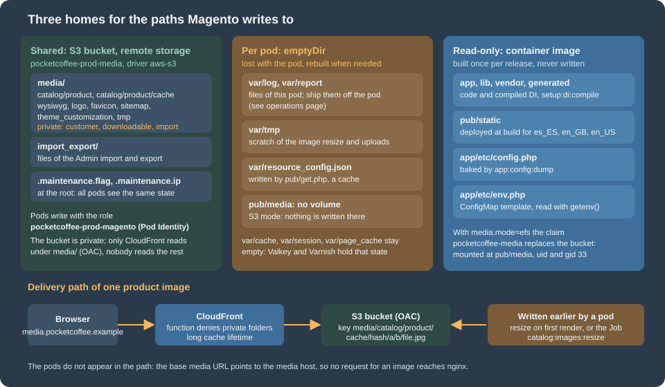
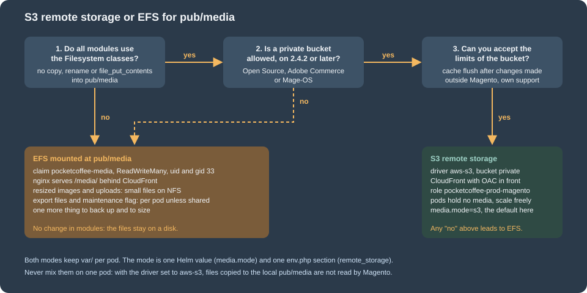

Cloud: Media and Remote Storage
|
This content was generated with the assistance of AI and should be verified against the official documentation before being relied on in production. |
This page was written against Magento Open Source and Adobe Commerce 2.4.9 and Mage-OS 3.6.0, and was checked on 2026-10-29.
The source of the modules Magento_RemoteStorage, Magento_AwsS3, Magento_MediaStorage and Magento_Catalog was read in the
mage-os/mageos-magento2 repository at the tag 3.6.0 (the files that matter here are identical on the main branch of that day),
because the Adobe pages describe the commands but not the internals. Adobe documents these features for 2.4.2 and later; its pages were
read on the date above and name no change for 2.4.9. The infrastructure targets Kubernetes 1.36 and 1.37 on Amazon EKS, the Amazon EFS
CSI driver 3.5.3, OpenTofu 1.12 with the AWS provider 6.x and nginx 1.29. The page names no prices. The listings were validated
with tofu validate and tofu fmt -check, helm lint and helm template piped to kubeconform -strict, php -l on PHP 8.5, shellcheck
and nginx -t on nginx 1.29, and the CloudFront function was run with Node.js; nothing was created in an AWS account and no bucket
was written to, so every statement about S3 behaviour comes from the source or from the official documentation, and the places that
need a staging test are marked.
A Magento shop writes files while it runs: the photos of the products and their resized copies, the images of CMS pages, the logo,
the files of the Admin import and export, the maintenance flag, logs and temporary files. On one server they all land on one disk.
On a cluster a pod can be replaced at any time and no two pods share a disk, so every path needs a home on purpose. This page
decides it path by path for Pocket Coffee, the fictitious specialty-coffee shop of this section, moving www.pocketcoffee.example to
the cluster pocketcoffee-prod in eu-west-1 with its media on media.pocketcoffee.example. The architecture is in
Cloud: Reference Architecture, the image in
Cloud: Container Image and Pipeline Build, the queue consumers and the
reindex Job in Cloud: Cron, Queue Consumers and Indexers, the chart that
mounts what is described here in
Cloud: EKS Infrastructure and Helm Deployment, and the copy of an
existing shop’s files in Cloud: Migrating from a Single Server. The same
question for other shops is answered in WordPress: Media Offload and
PrestaShop: Shared Media and Writable Paths; PrestaShop has no S3 option in
its core, Magento does.
Three homes for a path

The rule that decides the home is the same on every page of this series: ask who has to read the file afterwards.
-
Shared. A file that one request writes and a later request, possibly on another pod, reads: a product photo, a resized image, a file an administrator uploaded, an export that another pod will offer for download. In S3 mode that is the bucket; in EFS mode it is the volume.
-
Per pod. A file that only the pod that wrote it reads and that can be rebuilt: a log, a scratch file, a cache of the web entry point. Sharing these buys nothing and costs a network round trip.
-
The image. Code, the generated dependency-injection code, the deployed static files and the baked
app/etc/config.php. They change when you release, never at run time.
The table lists every path Magento writes under the web root. The columns for the two modes say where each path lives; the rows about
the keys of the bucket come from reading DirectoryList and the di.xml of Magento_RemoteStorage, not from an Adobe page, so check
them once with aws s3 ls on staging (the commands are at the end of the page).
| Path | What it holds | In S3 mode | In EFS mode |
|---|---|---|---|
|
The originals uploaded for the products. |
Bucket, key |
The shared volume |
|
The resized copies that the storefront links to (see the section on resizing). |
Bucket, key |
The shared volume |
|
Category images, images and thumbnails of the editor, the store logo and icons, sitemaps, theme files. |
Bucket, key |
The shared volume |
|
Files that customers upload, files that customers buy and the import folder: never public. |
Bucket, not readable through CloudFront (function and policy below) |
The shared volume, denied by nginx |
Files of the Admin import and export ( |
The CSV that an administrator uploads or downloads. |
Bucket, key |
Per pod unless mounted from the shared volume; verify the folders your export uses |
|
Maintenance mode and its exempt addresses. |
Bucket root: every pod and every Job sees the same state |
Per pod: |
|
Log files and error reports. |
Per pod |
Per pod |
|
Scratch space of the image resizing and of uploads. |
Per pod |
Per pod |
|
A small cache written by |
Per pod |
Per pod |
|
File caches and sessions. |
Not used: Valkey holds the cache and the sessions, Varnish the pages |
Not used |
|
Static files, compiled code, the configuration of the modules. |
The image |
The image |
|
The environment-specific configuration. |
ConfigMap, mounted read-only |
ConfigMap, mounted read-only |
Remote storage or EFS

Both modes are supported by the architecture of this series and the chart switches between them with one value, media.mode
(s3 or efs). They differ in where the work happens.
| S3 remote storage | EFS at pub/media |
|
|---|---|---|
How Magento sees it |
A different file driver. Magento’s own file classes read and write the bucket; the web server never sees the files. |
A directory, as on one server. Modules need no change. |
Pods |
Hold no media: nothing to mount, nothing to seed, start and stop freely. |
Mount the claim |
Delivery |
CloudFront reads the bucket directly with an origin access control; PHP and nginx are not in the path of an image. |
nginx serves |
Resizing |
Done in PHP, the result is written to the bucket (next section). One request-time resize costs a read, a resize and a write over the network. |
Done in PHP on the volume. Small files, many |
Risk |
A module that writes into |
File-system latency under load; a shared volume to size, back up and restore. |
Choose it when |
The shop is on the cluster for the long term, every module is checked, and you want pods that are plain and disposable. This is the default of the walkthrough. |
A module cannot be changed and writes into |
Adobe’s page states the constraints that decide it: remote storage needs Commerce 2.4.2 or later, it cannot be combined with the database
media storage, "some PHP file functions may not work as expected", and custom code must use the Magento file adapters instead of
copy, rename or file_put_contents. The page also says that Adobe does not support issues, data loss or outages of a bucket
that the customer provides. Neither mode needs a backup bucket: the versioning of the media bucket and the AWS Backup plan on
Cloud: Autoscaling, Observability, Backups and Security protect the files.
Source: Adobe Commerce: Remote storage
Remote storage with the AWS S3 driver
What the modules do
Remote storage is two modules that ship with Magento Open Source, Adobe Commerce and Mage-OS. Magento_RemoteStorage replaces
the file driver pool and the Filesystem service with versions that can send an operation to a remote driver, and
Magento_AwsS3 is the driver for Amazon S3. It is built on Flysystem 3 (league/flysystem-aws-s3-v3) and the AWS SDK for PHP. Reading the
source shows how far it reaches, which Adobe’s page does not say:
-
Two directory codes, by default. The
Filesystemthat most of Magento receives iscustomRemoteFilesystem, a virtual type that sends only the codesmedia(pub/media) andvar_import_exportto the bucket. Everything else (var/log,var/cache,generated,pub/static) is still the local disk. -
A longer list of classes get the full remote filesystem. The sitemap model and its controllers, the maintenance mode, the file
MimeandNamehelpers, the editor’s image storage (Cms\Model\Wysiwyg\Images\Storage), the category image information, the import (ImportExport\Model\Import, the product and the downloadable importers and the image directory provider) and the generic filesystem data collection are configured withfullRemoteFilesystem, which has no list of codes: their files, wherever they are under the root, go to the bucket. -
Hooks around native image code. Plugins copy the image to
var/tmpbefore the image library opens it and move the result to the bucket after it saved it (Plugin\Image), do the same for ZIP archives, and read the media gallery metadata of a remote file. -
A metadata cache. The adapter keeps what it knows about a file (existence, size, type) in the Magento cache, not in memory, so that the next request does not ask S3 again; AWS credentials are cached there too. On the cluster that cache is the Valkey group
pocketcoffee-prod-cache. -
One command.
bin/magento remote-storage:syncuploads what is on the local disk to the bucket.
Source: Mage-OS 3.6.0: Magento_RemoteStorage and Magento_AwsS3
The options
The options belong to setup:install and setup:config:set. They write the section remote_storage of app/etc/env.php;
the second column is the path in that file (read from ConfigOptionsList).
| Option | Key in env.php |
Meaning |
|---|---|---|
|
|
|
|
|
The bucket. Required with |
|
|
The region of the bucket. Required with |
|
|
An optional key prefix, so that one bucket can hold several shops. Empty here. |
|
|
Static access keys. Leave both out on EKS; see the section on credentials. |
|
|
The endpoint of an S3-compatible service. Not used with AWS. The source accepts it; Adobe’s page lists only the AWS options, so test any other service. |
|
|
Path-style addressing, for S3-compatible services that need it. Default |
The validation of setup:config:set is useful: when a deployment configuration already exists, it requires a bucket and a region
and then calls the adapter’s test(), which talks to S3. A wrong role or region fails the command instead of the first upload.
Switching it on
On a copy of the shop (staging, or the rehearsal of the migration) the commands are the ones of Adobe’s page. The first one matters: the
database media storage and remote storage cannot both be on. Adobe’s command sets system/media_storage_configuration/media_database; the
Magento_RemoteStorage source also attaches a warning to the neighbouring field media_storage ("Database media storage will be ignored
if remote storage is enabled"), so read the result with config:show and make sure that neither is on.
#!/usr/bin/env bash
# Run once on a staging copy of the shop: switch the media to the bucket and upload what exists.
set -euo pipefail
bin/magento config:set system/media_storage_configuration/media_database 0
bin/magento setup:config:set \
--remote-storage-driver=aws-s3 \
--remote-storage-bucket=pocketcoffee-prod-media \
--remote-storage-region=eu-west-1 \
-n
bin/magento config:show system/media_storage_configuration
bin/magento remote-storage:syncsetup:config:set is a command for a machine with a writable env.php. In the cluster the pods have a read-only, templated
env.php, so the commands are run once on staging to learn that the bucket and the role work, and the result is written into the template
that follows. Two behaviours of the sync are visible in Synchronizer and worth knowing before you rely on it:
-
It copies only local files that the bucket does not have yet, and only files whose name matches
*.*, a name with a dot; a file with no extension is not uploaded. It never deletes. -
It does not copy
var/import_export: the source marks that exclusion as temporary, and Adobe’s page says that those files are not migrated.
The env.php template
Every environment-specific value of the shop comes from the environment (see the
chart page). The media part of the template is small. The bucket and
the region come from the variables that the naming of this series reserves (MAGENTO_S3_BUCKET, MAGENTO_S3_REGION); the mode and the
base media URL are two more, introduced on this page (MAGENTO_MEDIA_MODE, MAGENTO_MEDIA_BASE_URL).
<?php
// Excerpt of the env.php template (ConfigMap pocketcoffee-env-php, mounted read-only at app/etc/env.php).
// Everything comes from the environment; the bucket is reached with the credentials of the pod (Pod Identity), so no key is set.
$mediaMode = getenv('MAGENTO_MEDIA_MODE') ?: 's3';
$mediaBaseUrl = getenv('MAGENTO_MEDIA_BASE_URL') ?: 'https://media.pocketcoffee.example/media/';
return [
'remote_storage' => $mediaMode === 's3'
? [
'driver' => 'aws-s3',
'prefix' => '',
'config' => [
'bucket' => getenv('MAGENTO_S3_BUCKET'),
'region' => getenv('MAGENTO_S3_REGION'),
],
]
: ['driver' => 'file'],
'system' => [
'default' => [
'web' => [
'unsecure' => ['base_media_url' => $mediaBaseUrl],
'secure' => ['base_media_url' => $mediaBaseUrl],
],
],
],
// ... db, cache, session, queue, crypt and the other sections of the template are on the cluster pages.
];The system section is the deployment-time way of setting configuration values; it wins over the database, which is why a restored
production database cannot send a staging shop to the production media host. The two paths are web/unsecure/base_media_url and
web/secure/base_media_url, the fields Base URL for User Media Files in Stores > Configuration > General > Web. Magento lists both in the
environment type pool of the Magento_Store module, that is, it treats them as values that belong to one environment. The value ends in
/media/ because the keys of the bucket start with media/: the URL https://media.pocketcoffee.example/media/catalog/product/a/b/x.jpg
reaches the key media/catalog/product/a/b/x.jpg. When the fields are empty, Magento derives the media URL from the base URL of the
shop ({{unsecure_base_url}}media/), which would send the image requests to the pods.

Credentials: the role of the pod
The factory of the driver builds an S3Client. When key and secret are both empty, it asks for credentials from the default credential
provider chain of the AWS SDK for PHP and caches the result in the Magento cache. That chain includes the container credential provider,
which is what EKS Pod Identity uses: the agent on the node sets AWS_CONTAINER_CREDENTIALS_FULL_URI and
AWS_CONTAINER_AUTHORIZATION_TOKEN_FILE in the pod, and the SDK source accepts the link-local addresses of the agent (169.254.170.23
and fd00:ec2::23). So the shop needs no keys in env.php, in the Secret or in the image: the pods of the service account
pocketcoffee-magento assume the role pocketcoffee-prod-magento, which the OpenTofu below creates. The basics of the mechanism are in
EKS Clusters and Identity and Access.
Check on staging that the installed aws/aws-sdk-php is recent enough: support for AWS_CONTAINER_AUTHORIZATION_TOKEN_FILE is in the SDK
today, but a shop that has not run composer update for a long time may carry an older copy. The check is composer show aws/aws-sdk-php
and a write that CloudTrail attributes to the role of the pods, not to a node role.
What the bucket holds
The keys follow from the code, and aws s3 ls confirms them. The media directory is stored under the key prefix media/ (the URL path of
that directory code), the import and export files under import_export/, and the two maintenance files at the root of the bucket, all under
the optional prefix. The driver writes every object with the canned ACL private
(private const CONFIG = ['ACL' => 'private', ...] in AwsS3.php). The bucket in this page has ACLs disabled (BucketOwnerEnforced,
the AWS default). The AWS documentation says that such a bucket accepts requests with no ACL or with bucket-owner-full-control, and rejects
other ACLs; it does not name private. Whether private passes was not tested here. Run remote-storage:sync on staging against the
real bucket first: if it fails with AccessControlListNotSupported, set the ownership of the bucket to BucketOwnerPreferred (and keep
Block Public Access on), which accepts the ACL.
What remote storage does not cover
-
Anything outside the two directory codes, and the classes listed above. A module that builds a path under
pub/mediawithBP . '/pub/media'andfile_put_contentswrites to the pod’s disk, which on the read-only root file system fails and in a writable one is lost when the pod goes. Search the code of your modules forfile_put_contents,copy(,rename(,mkdir(,fopen(andmove_uploaded_file(with a media path; Adobe’s pages point to the coding standard that forbids them. -
Static files.
pub/staticis built into the image and is not part of remote storage. -
The web server’s rules for media. The
.htaccessfiles inpub/mediaand its subfolders, and thelocationblocks of the nginx sample that deny/media/customer/,/media/downloadable/,/media/import/and the others, protect the local folders. A bucket has no such files, so the same protection has to be built in front of it (the CloudFront function below). -
pub/get.php. On one server the web server sends a missing media file toget.php. With remote storage on, the media synchronisation ofget.phpcopies the file from the bucket to the localpub/mediaof the pod. It is a fallback for a request that reaches a pod; with the base media URL on the media host no request does, and the read-only root file system would reject the copy. -
Generated resized images. They are stored in the bucket, see the next section, but Adobe’s page says the integration "generates and stores cached images on the local file system" and asks for the usual permissions on
pub/media. The source writes them tovar/tmpfirst and moves them to the bucket. Verify on staging with the chart’s settings (read-only root, nopub/mediavolume) that a product page renders its images, and look forPermission deniedinvar/log. -
Export. Adobe publishes the quality patch ACP2E-4786 for a product export that failed with S3 remote storage because the driver used an invalid path. Run an Admin export of the products on staging, and check with
composer showand the Quality Patches Tool whether your version needs the patch. -
Third-party media extensions (alternative galleries, image optimisers, PDF generators) are not covered. Treat each one as a module to test, not as a configuration.
Image resizing and the catalog image cache
A product image has one original (pub/media/catalog/product/a/b/x.jpg) and a resized copy for every use of it in the theme: the
list, the product page, the thumbnail, the cart. The sizes are declared in the etc/view.xml of the theme. The storefront links to the
copy under pub/media/catalog/product/cache/<hash>/a/b/x.jpg, where the hash identifies the image parameters, so changing a size or the
theme creates a new directory instead of overwriting files that a CDN may hold. The URL format is the setting
web/url/catalog_media_url_format, whose default is hash.
What happens on the first request. When a template asks for an image that the cache does not have, Magento\Catalog\Model\Product\Image
resizes it in PHP and saves it. With remote storage enabled, the Plugin\Image of Magento_RemoteStorage copies the original from the
bucket to var/tmp, lets the image library work on that copy, and moves the result to the bucket. Three consequences for the cluster:
-
var/tmpis a real working directory; give thevarvolume enough room (the chart uses anemptyDirwith a limit) for the biggest original that your merchants upload, times the number of concurrent PHP workers. -
The first page that shows a new product is slower, because it does the resizing. The Varnish page cache hides this for the next visitors, not for the first one.
-
A cached HTML page can contain the URL of an image that is later deleted from the cache. CloudFront then answers
404(the next section explains why not403), and the broken image stays until the HTML is rebuilt.
Generating the sizes ahead of time. Adobe’s playbook says that all catalog images should be resized before a store goes into
production: bin/magento catalog:images:resize resizes every product image for every theme, single-threaded, and it re-does images that exist. The
command is defined in Magento_MediaStorage and has two options: --async (-a), which publishes one message per image to the topic
media.storage.catalog.image.resize, and --skip_hidden_images, which ignores images that are hidden from the product page.
The messages are processed by the consumer media.storage.catalog.image.resize; on the cluster that consumer is the Deployment
pocketcoffee-consumer-media-storage-catalog-image-resize, scaled by KEDA on the queue length, as described on
Cloud: Cron, Queue Consumers and Indexers; the asynchronous mode also needs
the bulk (asynchronous operations) tables and a message broker. The synchronous command is a Job, not kubectl exec, so that a dropped
connection does not stop it:
apiVersion: batch/v1
kind: Job
metadata:
name: pocketcoffee-image-resize
namespace: pocketcoffee
spec:
backoffLimit: 0
ttlSecondsAfterFinished: 86400
template:
metadata:
labels:
app.kubernetes.io/name: pocketcoffee-image-resize
spec:
restartPolicy: Never
serviceAccountName: {{ include "pc.serviceAccountName" . }}
containers:
- name: resize
image: {{ include "pc.image" . }}
command: ["bin/magento", "catalog:images:resize"]
envFrom:
{{- include "pc.envFrom" . | nindent 12 }}
env:
{{- include "pc.mediaEnv" . | nindent 12 }}
resources:
requests:
cpu: "1"
memory: 1Gi
limits:
memory: 2Gi
securityContext:
allowPrivilegeEscalation: false
readOnlyRootFilesystem: true
volumeMounts:
{{- include "pc.mediaVolumeMounts" . | nindent 12 }}
- name: env-php
mountPath: /var/www/html/app/etc/env.php
subPath: env.php
readOnly: true
volumes:
{{- include "pc.mediaVolumes" . | nindent 8 }}
- name: env-php
configMap:
name: pocketcoffee-env-phpThe Job uses the same image, service account, environment and read-only root file system as the web pods, so it writes to the bucket with the role of the pods; the memory limit is sized for the image library and should follow the largest original of the catalog. Run it after a change of the image sizes, after a bulk import of photos and after a restore of the bucket from a backup. For the daily flow of a few new products it is not needed: the storefront creates the missing copies on first view.
Not with a CDN in front of S3: resizing in nginx. Adobe also describes resizing on the web server: the setting Catalog media URL
format is changed to the option that adds the width and height to the URL as query parameters, and nginx, with the image filter
module and the location block of the sample, resizes the original on the fly. It needs a web server in the path of every image
request. With CloudFront reading S3 directly there is no such server, so the original would be returned for every size. Keep the
hash format, which is the default, in this design. (Lambda@Edge or CloudFront functions that resize images are outside what Adobe
documents and are not covered here.)
Flushing the image cache. System > Tools > Cache Management > Flush Catalog Images Cache in the Admin deletes the directory
pub/media/catalog/product/cache through Magento’s file classes, which on S3 is one delete request per object, and ignores the
failure that appears when the storefront creates a file at the same time. For a large catalogue, delete the prefix with the AWS CLI instead,
and tell Magento afterwards: the adapter keeps the existence of every file in the Magento cache, so after a change that bypassed Magento
the cache would still say that the files exist (and would not recreate them).
#!/usr/bin/env bash
# Remove the resized product images outside Magento, tell Magento, then build them again.
set -euo pipefail
aws s3 rm s3://pocketcoffee-prod-media/media/catalog/product/cache/ --recursive --region eu-west-1 --only-show-errors
bin/magento cache:flush
bin/magento catalog:images:resizeCloudFront in front of the bucket
The bucket is private and CloudFront reads it. The distribution media.pocketcoffee.example uses an origin access control (OAC): CloudFront signs
its requests to S3 with SigV4 and the bucket policy accepts only the ARN of that distribution, and only for the keys under media/. The
bucket policy is the first of three layers that keep private files private:
-
The bucket policy lets CloudFront read
media/*only. The keysimport_export/(exports can hold customer data) and.maintenance.flagare never readable through the distribution. -
A CloudFront function denies the private subfolders of
media/. They are the folders that the nginx sample of Magento denies:customer,customer_address,downloadable,importandcustom_options, plus the.xmlfiles oftheme_customization. The function runs before the cache, so a denied path is never fetched or cached. -
The files carry no public ACL, and Block Public Access is on: nobody can publish a single object by mistake.
The same distribution carries the cache policy Managed-CachingOptimized, a response headers policy that adds Cache-Control (a year; product image
paths contain a hash and a changed image gets a new name) and the redirection of HTTP to HTTPS. S3 answers 403, not 404, for a key that does not
exist when the caller may not list the bucket; the distribution turns it into 404 with a short error-caching time, so that a missing
image is retried soon.
The OpenTofu has three parts: the bucket, the distribution with the function, and the role of the pods. The ACM certificate for
media.pocketcoffee.example must be in us-east-1 (see Route 53 and Certificates) and is a variable here; the
cluster, the VPC and the other services are on
Cloud: EKS Infrastructure and Helm Deployment. The AWS basics are on
S3 and CloudFront.
These files extend and replace the minimal media.tf of the infrastructure page: they declare the same resources (aws_s3_bucket.media and aws_iam_role.magento) with the CloudFront policy, the lifecycle rules and the DNS record added, and they take the cluster name, the certificate and the hosted zone as variables. Use them instead of that file, not beside it, or the resources are declared twice.
terraform {
required_version = ">= 1.8"
required_providers {
aws = {
source = "hashicorp/aws"
version = "~> 6.70"
}
}
}
provider "aws" {
region = "eu-west-1"
}
# media-s3.tf: bucket, CloudFront distribution for media.pocketcoffee.example and the pod role.
variable "media_certificate_arn" {
description = "ACM certificate for media.pocketcoffee.example, issued in us-east-1."
type = string
}
variable "route53_zone_id" {
description = "Hosted zone of pocketcoffee.example."
type = string
}
variable "cluster_name" {
type = string
default = "pocketcoffee-prod"
}
resource "aws_s3_bucket" "media" {
bucket = "pocketcoffee-prod-media"
}
resource "aws_s3_bucket_public_access_block" "media" {
bucket = aws_s3_bucket.media.id
block_public_acls = true
block_public_policy = true
ignore_public_acls = true
restrict_public_buckets = true
}
resource "aws_s3_bucket_ownership_controls" "media" {
bucket = aws_s3_bucket.media.id
rule {
object_ownership = "BucketOwnerEnforced"
}
}
resource "aws_s3_bucket_versioning" "media" {
bucket = aws_s3_bucket.media.id
versioning_configuration {
status = "Enabled"
}
}
resource "aws_s3_bucket_server_side_encryption_configuration" "media" {
bucket = aws_s3_bucket.media.id
rule {
apply_server_side_encryption_by_default {
sse_algorithm = "AES256"
}
}
}
resource "aws_s3_bucket_lifecycle_configuration" "media" {
bucket = aws_s3_bucket.media.id
rule {
id = "expire-noncurrent-versions"
status = "Enabled"
filter {}
noncurrent_version_expiration {
noncurrent_days = 30
}
abort_incomplete_multipart_upload {
days_after_initiation = 7
}
}
# The resized images are a cache that Magento rebuilds; do not keep their old versions at all.
rule {
id = "expire-resized-image-versions"
status = "Enabled"
filter {
prefix = "media/catalog/product/cache/"
}
noncurrent_version_expiration {
noncurrent_days = 1
}
}
}
resource "aws_cloudfront_origin_access_control" "media" {
name = "pocketcoffee-prod-media"
origin_access_control_origin_type = "s3"
signing_behavior = "always"
signing_protocol = "sigv4"
}
# Viewer-request function: the paths that the nginx sample of Magento denies are never served from the bucket.
resource "aws_cloudfront_function" "media_deny" {
name = "pocketcoffee-media-deny"
runtime = "cloudfront-js-2.0"
comment = "Deny the private subfolders of pub/media"
publish = true
code = <<-EOT
var denied = [
'/media/customer/',
'/media/customer_address/',
'/media/downloadable/',
'/media/import/',
'/media/custom_options/'
];
function handler(event) {
var uri = event.request.uri;
var isDenied = denied.some(function (prefix) { return uri.indexOf(prefix) === 0; });
if (isDenied || /^\/media\/theme_customization\/.*\.xml$/.test(uri)) {
return { statusCode: 403, statusDescription: 'Forbidden' };
}
return event.request;
}
EOT
}
data "aws_cloudfront_cache_policy" "optimized" {
name = "Managed-CachingOptimized"
}
resource "aws_cloudfront_response_headers_policy" "media" {
name = "pocketcoffee-media"
custom_headers_config {
items {
header = "Cache-Control"
value = "public, max-age=31536000"
override = false
}
}
}
resource "aws_cloudfront_distribution" "media" {
enabled = true
is_ipv6_enabled = true
http_version = "http2and3"
aliases = ["media.pocketcoffee.example"]
comment = "Pocket Coffee: pub/media from S3"
origin {
origin_id = "media"
domain_name = aws_s3_bucket.media.bucket_regional_domain_name
origin_access_control_id = aws_cloudfront_origin_access_control.media.id
}
default_cache_behavior {
target_origin_id = "media"
viewer_protocol_policy = "redirect-to-https"
allowed_methods = ["GET", "HEAD"]
cached_methods = ["GET", "HEAD"]
cache_policy_id = data.aws_cloudfront_cache_policy.optimized.id
response_headers_policy_id = aws_cloudfront_response_headers_policy.media.id
compress = true
function_association {
event_type = "viewer-request"
function_arn = aws_cloudfront_function.media_deny.arn
}
}
# Without s3:ListBucket for CloudFront, S3 answers 403 for a missing key; show it as 404 and do not keep it for long.
custom_error_response {
error_code = 403
response_code = 404
error_caching_min_ttl = 10
}
restrictions {
geo_restriction {
restriction_type = "none"
}
}
viewer_certificate {
acm_certificate_arn = var.media_certificate_arn
ssl_support_method = "sni-only"
minimum_protocol_version = "TLSv1.2_2021"
}
}
data "aws_iam_policy_document" "media_bucket" {
statement {
sid = "AllowCloudFrontReadMedia"
actions = ["s3:GetObject"]
resources = ["${aws_s3_bucket.media.arn}/media/*"]
principals {
type = "Service"
identifiers = ["cloudfront.amazonaws.com"]
}
condition {
test = "StringEquals"
variable = "AWS:SourceArn"
values = [aws_cloudfront_distribution.media.arn]
}
}
statement {
sid = "DenyInsecureTransport"
effect = "Deny"
actions = ["s3:*"]
resources = [aws_s3_bucket.media.arn, "${aws_s3_bucket.media.arn}/*"]
principals {
type = "*"
identifiers = ["*"]
}
condition {
test = "Bool"
variable = "aws:SecureTransport"
values = ["false"]
}
}
}
resource "aws_s3_bucket_policy" "media" {
bucket = aws_s3_bucket.media.id
policy = data.aws_iam_policy_document.media_bucket.json
depends_on = [aws_s3_bucket_public_access_block.media]
}
resource "aws_route53_record" "media" {
zone_id = var.route53_zone_id
name = "media.pocketcoffee.example"
type = "A"
alias {
name = aws_cloudfront_distribution.media.domain_name
zone_id = aws_cloudfront_distribution.media.hosted_zone_id
evaluate_target_health = false
}
}Source: OpenTofu registry: aws_cloudfront_distribution and Amazon CloudFront: restrict access to an Amazon S3 origin
Why each piece is the way it is:
-
The lifecycle rule for the cache prefix. The resized images are rebuilt by Magento. Keeping the old versions of a prefix that a Flush deletes and Magento recreates would double the storage for nothing; the other rule keeps old versions of everything else for 30 days.
-
No
s3:ListBucketfor CloudFront. The distribution may only get objects, so a missing key is a403; the custom error response maps it to404. -
The deny statement on insecure transport refuses plain HTTP to the bucket for everyone, including the pods.
-
http_version = "http2and3"and compression. The images are already compressed; compression helps the few text files (SVG, CSS and JavaScript of modules that put them in the media folder). -
ReadWriteObjectson the whole bucket for the pods. The pods read and writemedia/,import_export/and the maintenance files, so the role covers the bucket. It does not cover other buckets, the bucket policy or the bucket’s settings.AbortMultipartUploadandListMultipartUploadPartsare there for large objects.
The role of the pods and the association with the service account (the Pod Identity mechanism of the section on credentials):
# pod-role.tf: the role of the Magento pods, bound to the service account with EKS Pod Identity.
data "aws_iam_policy_document" "pod_trust" {
statement {
actions = ["sts:AssumeRole", "sts:TagSession"]
principals {
type = "Service"
identifiers = ["pods.eks.amazonaws.com"]
}
}
}
data "aws_iam_policy_document" "magento_media" {
statement {
sid = "ListBucket"
actions = ["s3:ListBucket", "s3:GetBucketLocation"]
resources = [aws_s3_bucket.media.arn]
}
statement {
sid = "ReadWriteObjects"
actions = [
"s3:GetObject",
"s3:PutObject",
"s3:DeleteObject",
"s3:AbortMultipartUpload",
"s3:ListMultipartUploadParts",
]
resources = ["${aws_s3_bucket.media.arn}/*"]
}
}
resource "aws_iam_role" "magento" {
name = "pocketcoffee-prod-magento"
assume_role_policy = data.aws_iam_policy_document.pod_trust.json
}
resource "aws_iam_role_policy" "magento_media" {
name = "media-bucket"
role = aws_iam_role.magento.id
policy = data.aws_iam_policy_document.magento_media.json
}
resource "aws_eks_pod_identity_association" "magento" {
cluster_name = var.cluster_name
namespace = "pocketcoffee"
service_account = "pocketcoffee-magento"
role_arn = aws_iam_role.magento.arn
}
output "media_bucket" {
value = aws_s3_bucket.media.bucket
}
output "media_distribution_id" {
value = aws_cloudfront_distribution.media.id
}
output "magento_role_arn" {
value = aws_iam_role.magento.arn
}Source: OpenTofu registry: aws_eks_pod_identity_association and Amazon EKS: associate a role with a service account
The role is pocketcoffee-prod-magento, the name that the series uses for the pods. The other workloads of the cluster (the external secrets
operator, the EFS driver, the deployment pipeline) have their own roles and cannot touch the bucket. Every pod of the chart uses the service account
pocketcoffee-magento, so the web pods, the cron Job, the consumers and the Jobs write to the bucket with the same identity. Splitting it by
using another service account is possible, but the cron writes sitemaps and exports too, so little would be gained.
Pods that still receive a media request
With the base media URL on the media host, the HTML never links to an image on www.pocketcoffee.example. Old links do exist: e-mails that were sent
before the move, a cached page, a bookmarked image. Send them to the media host instead of letting them reach get.php:
# media.mode=s3: the pods do not serve media. Old links to the shop host are sent to the media host.
location /media/ {
return 301 https://media.pocketcoffee.example$request_uri;
}Source: nginx: the return directive
Adobe documents another way for the web server to serve S3 media: a location that proxy_pass`es to the S3 endpoint of the bucket, with
the `ngx_aws_auth module when you use access keys instead of roles. It puts the pods in the path of every image and needs an nginx
module that the official image does not carry. CloudFront with an OAC does the same job without either.
When a file changes in place
Product images are not overwritten: Magento gives a new upload a new name (with a numeric suffix) and a changed size has a new hash, so the long cache
lifetime is safe. Files that an administrator replaces in place, such as the logo or an image of the editor, keep their name: invalidate those paths
after the change with aws cloudfront create-invalidation --distribution-id <id> --paths "/media/logo/*" (the id is the OpenTofu output
media_distribution_id), and list paths, not the whole distribution.
EFS for pub/media
If a module cannot use remote storage, or the team wants the least change from the single server, pub/media is a shared volume. The file
system, its mount targets and the EFS CSI driver add-on are part of the infrastructure module; the service is described on
Block and File Storage and the volume concepts on
Persistent Volumes and StorageClasses. What follows is specific to Magento.
The pods run as www-data, user and group 33. An EFS access point forces a POSIX identity on every operation that goes through it, so
one access point with user and group 33 gives Magento the ownership it expects without an init container that runs chown, and it fixes
the root directory so the shop sees only its own subtree.
# media-efs.tf: only for media.mode=efs. The file system and its mount targets belong to the infrastructure module.
variable "efs_file_system_id" {
description = "ID of the EFS file system pocketcoffee-prod-media."
type = string
default = ""
}
resource "aws_efs_access_point" "media" {
count = var.efs_file_system_id == "" ? 0 : 1
file_system_id = var.efs_file_system_id
posix_user {
uid = 33
gid = 33
}
root_directory {
path = "/pocketcoffee/media"
creation_info {
owner_uid = 33
owner_gid = 33
permissions = "0775"
}
}
tags = {
Name = "pocketcoffee-media"
}
}The static volume and the claim pocketcoffee-media bind to that access point. The volume handle is the file system ID and the access point ID
separated by two colons, and the claim is ReadWriteMany. Retain keeps the files when the claim is deleted by mistake.
apiVersion: v1
kind: PersistentVolume
metadata:
name: pocketcoffee-media
spec:
capacity:
storage: 200Gi
volumeMode: Filesystem
accessModes:
- ReadWriteMany
persistentVolumeReclaimPolicy: Retain
storageClassName: ""
mountOptions:
- tls
csi:
driver: efs.csi.aws.com
volumeHandle: fs-0123456789abcdef0::fsap-0123456789abcdef0
---
apiVersion: v1
kind: PersistentVolumeClaim
metadata:
name: pocketcoffee-media
namespace: pocketcoffee
spec:
accessModes:
- ReadWriteMany
storageClassName: ""
volumeName: pocketcoffee-media
resources:
requests:
storage: 200GiWith dynamic provisioning, a StorageClass with provisioningMode: efs-ap makes the driver create an access point per claim; the parameters are in
the driver’s documentation and an example is on the
chart page when the chart uses it. The chart mounts the claim at
pub/media (the helper in the section on var/) and nginx serves it. The web server must apply the rules that the bucket gets from CloudFront,
since nothing else does:
# media.mode=efs: pub/media is the shared volume; the private subfolders are denied as in the Magento sample.
location /media/ {
expires 1y;
add_header Cache-Control "public";
try_files $uri =404;
}
location ~ ^/media/(customer|customer_address|downloadable|import|custom_options)/ {
deny all;
}
location ~ ^/media/theme_customization/.*\.xml$ {
deny all;
}Source: Adobe Commerce: Nginx configuration and nginx: location
The regular-expression locations win over the prefix /media/, so the deny rules take effect. The rest of the nginx configuration is
in the container image page. CloudFront for media.pocketcoffee.example is then a distribution with a custom origin (the load balancer or
Gateway of the shop) instead of the bucket, as on
the PrestaShop page; the base media URL and env.php template do not change.
Three things differ from the S3 mode and are easy to forget:
-
Thumbnails are slow on a cold cache. A first page view creates many small files, and every
statgoes over the network. Generate the sizes with the Job after a bulk import, use a regional file system with elastic throughput, and keep the code andvar/cacheoff it (see the PrestaShop page for the measurements advice; none was made for this shop). -
Export files are per pod.
var/importexportandvar/exportare not remote in this mode. An Admin export is made by a consumer on one pod and downloaded through the Admin on another, so mount a subpath of the same claim at those folders too, or the download fails. Check which folders the export of your version uses with a test export andkubectl exec ... ls. -
The maintenance flag is per pod.
bin/magento maintenance:enablein a Job affects only the Job’s disk. Release the shop the way Cloud: Releases and Zero-Downtime Deployments describes, not by the flag.
From EFS to S3, or back
Moving from EFS to the bucket needs the files in the bucket under media/. This Job mounts the EFS claim read-only at pub/media and runs with the
shop’s env.php in the S3 mode (media.mode=s3): remote-storage:sync reads the local pub/media and writes the bucket.
apiVersion: batch/v1
kind: Job
metadata:
name: pocketcoffee-media-sync
namespace: pocketcoffee
spec:
backoffLimit: 0
ttlSecondsAfterFinished: 86400
template:
metadata:
labels:
app.kubernetes.io/name: pocketcoffee-media-sync
spec:
restartPolicy: Never
serviceAccountName: {{ include "pc.serviceAccountName" . }}
containers:
- name: sync
image: {{ include "pc.image" . }}
command: ["bin/magento", "remote-storage:sync"]
envFrom:
{{- include "pc.envFrom" . | nindent 12 }}
env:
{{- include "pc.mediaEnv" . | nindent 12 }}
securityContext:
allowPrivilegeEscalation: false
readOnlyRootFilesystem: true
volumeMounts:
- name: var
mountPath: /var/www/html/var
- name: tmp
mountPath: /tmp
- name: old-media
mountPath: /var/www/html/pub/media
readOnly: true
- name: env-php
mountPath: /var/www/html/app/etc/env.php
subPath: env.php
readOnly: true
volumes:
- name: var
emptyDir: {}
- name: tmp
emptyDir: {}
- name: old-media
persistentVolumeClaim:
claimName: pocketcoffee-media
readOnly: true
- name: env-php
configMap:
name: pocketcoffee-env-phpFor a large library, aws s3 sync is faster and also copies files without a dot; see the next section. The reverse (S3 to EFS) is aws s3 sync from the
bucket to a pod that has the claim mounted, followed by the switch of media.mode.
Which var/ paths may stay per pod
The chart mounts var/ as an emptyDir and the root file system is read-only. Nothing that has to survive a pod or be seen by another pod
is kept there. The paths, from the table at the start of the page:
-
var/logandvar/reportare per pod; ship the files off the pod (see Cloud: Autoscaling, Observability, Backups and Security) or the next pod loses the evidence of the last one. An error report page shows a report ID that exists only on the pod that served it. -
var/tmpis the scratch space of the image resizing and of uploads (see above). -
var/resource_config.jsonis written byget.php; it is a cache. -
var/cache,var/page_cacheandvar/sessionstay empty because the cache backend is Valkey, the full page cache is Varnish and the sessions are in Valkey (see Cloud: OpenSearch, Valkey and RabbitMQ as Managed Services). -
generated/,pub/staticandvar/view_preprocessedare built into the image.generated/is not writable in production; if the pod needs a file that the build did not create, the build is incomplete, and the fix is in the image, not a writablegenerated/.
A pod whose root is read-only and whose var/ is empty is the test of the whole list: if the storefront and the Admin work in
that pod on staging, with the traffic of a full day, nothing else needs a volume. The emptyDir has a size limit, so that a log
flood evicts one pod instead of filling the node’s disk. The helpers of the chart that make the mode a value:
{{- /* Fragment: the media variables that the env.php template reads (listing 1). */ -}}
{{- define "pc.mediaEnv" -}}
- name: MAGENTO_MEDIA_MODE
value: {{ .Values.media.mode | quote }}
- name: MAGENTO_MEDIA_BASE_URL
value: {{ .Values.media.baseUrl | quote }}
{{- if eq .Values.media.mode "s3" }}
- name: MAGENTO_S3_BUCKET
value: {{ .Values.media.bucket | quote }}
- name: MAGENTO_S3_REGION
value: eu-west-1
{{- end }}
{{- end -}}
{{- define "pc.mediaVolumeMounts" -}}
- name: var
mountPath: /var/www/html/var
- name: tmp
mountPath: /tmp
{{- if eq .Values.media.mode "efs" }}
- name: media
mountPath: /var/www/html/pub/media
{{- end }}
{{- end -}}
{{- define "pc.mediaVolumes" -}}
- name: var
emptyDir:
sizeLimit: 2Gi
- name: tmp
emptyDir:
sizeLimit: 1Gi
{{- if eq .Values.media.mode "efs" }}
- name: media
persistentVolumeClaim:
claimName: {{ .Values.media.claimName }}
{{- end }}
{{- end -}}Source: Kubernetes: emptyDir and Helm: named templates
Under media.mode=s3 the pod mounts nothing for pub/media; under efs it mounts the claim. The media values are
media.mode, media.bucket, media.claimName and, new on this page, media.baseUrl; the chart page owns their final spelling.
Moving the files of an existing shop
The complete procedure, with its freeze and its rollback, is on Cloud: Migrating from a Single Server. The two ways to fill the bucket, and their differences, belong here.
-
aws s3 syncfrom the old server. Fast, parallel, copies every file (including files without a dot), and does not need Magento. Copypub/mediato the prefixmedia/, and leave the image cache out: it is rebuilt by the Job and an old copy only adds stale entries. Never copy the.htaccessfiles as a protection: they mean nothing on S3. -
bin/magento remote-storage:sync. Slow (one request per file, serial), needs a working Magento that can reach the database, and writes through the driver, so it keeps the metadata cache consistent. It skips files with no dot in the name.
#!/usr/bin/env bash
# On the old server: copy pub/media to the bucket under the key prefix media/, without the generated image cache.
set -euo pipefail
cd /var/www/pocketcoffee
aws s3 sync pub/media s3://pocketcoffee-prod-media/media/ \
--region eu-west-1 \
--exclude "catalog/product/cache/*" \
--exclude "tmp/*"Source: AWS CLI: aws s3 sync
After any copy that bypassed Magento, run bin/magento cache:flush: the metadata cache may hold a negative answer for a file that now exists. Then check
the result from outside Magento, in the order below: the keys, the headers of an image, and the three paths that must not be served.
#!/usr/bin/env bash
# Check the bucket, the URL of an image and the headers that CloudFront returns.
set -euo pipefail
aws s3 ls s3://pocketcoffee-prod-media/media/catalog/product/ --region eu-west-1 | head
aws s3 ls s3://pocketcoffee-prod-media/ --region eu-west-1
# Replace the key with one that the first listing shows.
curl -sI https://media.pocketcoffee.example/media/catalog/product/a/b/example.jpg | head -n 12
curl -s -o /dev/null -w '%{http_code}\n' https://media.pocketcoffee.example/media/customer/anything.txt
curl -s -o /dev/null -w '%{http_code}\n' https://media.pocketcoffee.example/.maintenance.flagSource: AWS CLI: aws s3 ls
The first listing must show media/ and, after an export, import_export/; the object keys must not start with pub/. The first curl must answer 200
with a Cache-Control header and x-cache from CloudFront on the second run; the other two must not answer 200 (403 from the function, 404 or 403 from
the bucket policy and the error response).
Pitfalls
| Symptom | Cause and fix |
|---|---|
Images are broken on the storefront and point to |
The base media URL is empty and Magento derived it from the base URL. Set both |
Images are broken and point to the media host, CloudFront answers |
The key is not in the bucket under |
An image exists in the bucket but Magento says it does not (or the other way round) |
The file was added or removed outside Magento and the metadata cache disagrees. |
|
The bucket has ACLs disabled and the driver sent |
|
The pod does not have the role. Check the Pod Identity association of the service account, the agent add-on and the SDK version; do not add keys. |
A module writes a file into |
It uses native PHP file functions, which write to the pod’s disk. Change it to the Magento file adapters, or use the EFS mode. |
|
The path is not mounted. |
A customer can open |
The CloudFront function or the nginx rules are missing. Test the three paths of the check script after every change of the distribution. |
Admin export succeeds and the download is |
EFS mode: the export is on another pod’s disk. Mount the export folders from the claim, or use the S3 mode. |
|
EFS mode: the flag is on the Job’s disk. With the S3 mode it is in the bucket; verify it with |